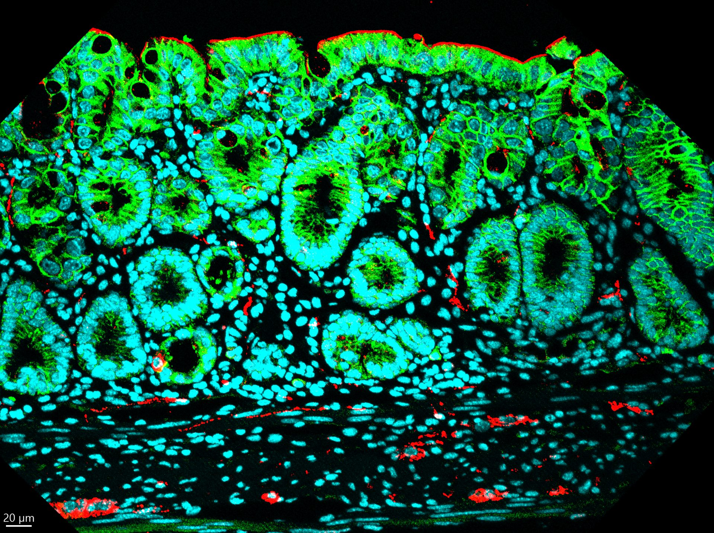
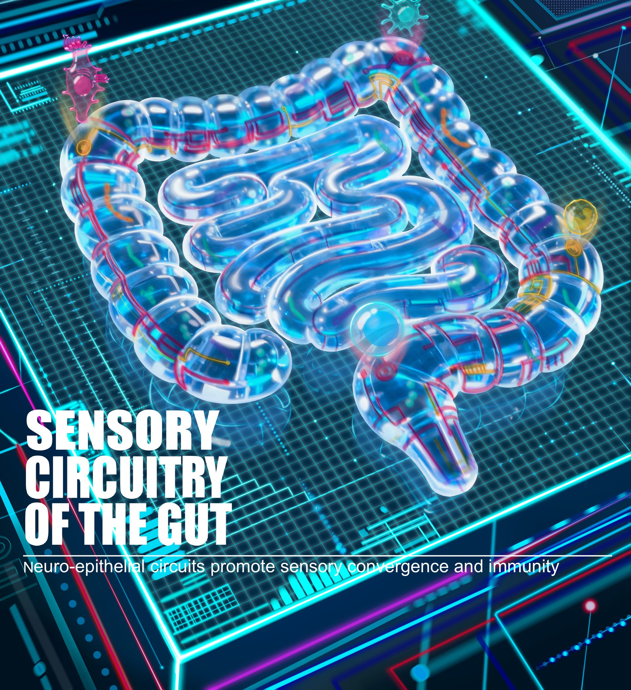
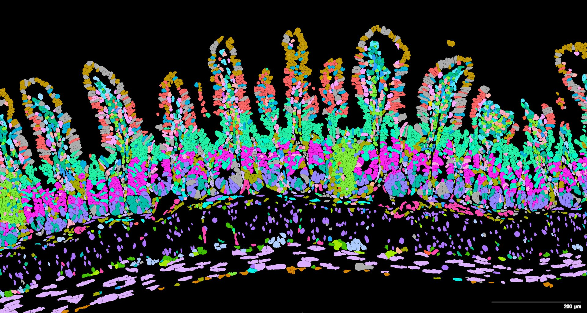

We investigate how sensory neurons orchestrate immune responses in the gut — integrating microbial, dietary, and injury signals to control epithelial function, innate and adaptive immune responses.
The Zhang lab investigates how peripheral sensory neurons orchestrate immune responses in the gut — integrating microbial, dietary, and injury signals to control epithelial function, innate immunity, and adaptive responses. Our long-term goal is to identify neuroimmune pathways that can be therapeutically targeted to treat inflammatory bowel disease, food allergy, infection, and colorectal cancer.
Neuroimmune circuits that maintain gut health and drive tissue repair after injury or infection.
How sensory neurons regulate immune responses in health and disease.
Mapping neuroimmune communication within tissues at single-cell resolution.
Neuroimmune pathways in colorectal cancer initiation and anti-tumor immunity.
The immune system does not operate in isolation. Peripheral sensory neurons continuously sample the tissue environment — integrating neuronal, microbial, tissue, and immune signals — and relay this information to shape immune outcomes at barrier surfaces.
Our lab proposes that sensory convergence nodes — innervated stromal cells, tissue-resident immune cells, and neuro-immune synapses — act as computational hubs that integrate these diverse inputs and direct immune decisions toward protection, tolerance, repair, or inflammation.
Innervated stromal cells, tissue-resident immune cells, and neuro-immune synapses integrate Ca²⁺, cAMP, MAPK, and NF-kB signals to coordinate immune outcomes.
Sensory inputs — neuropeptides, PAMPs, DAMPs, cytokines — converge on shared intracellular pathways to drive context-dependent immune responses.
Inflammation rewires convergence nodes, creating neuroimmune memory that underlies chronic disease and cancer susceptibility.


We integrate immunology, neuroscience, microbiology, genetics, and spatial multi-omics to uncover neuroimmune pathways that can be targeted therapeutically.
Defining neuroimmune circuits that maintain gut homeostasis and promote tissue repair after injury or infection. We study how sensory neurons integrate environmental and microbial cues to coordinate immune responses.
IBDTissue repairUnderstanding how sensory neurons regulate adaptive immunity during health and inflammatory disease, with relevance to food allergy and infection.
Food allergyAdaptive immunityInvestigating how sensory neurons regulate epithelial signals that shape the localization, interactions, and function of immune cells at the intestinal barrier.
Epithelial cellsMicrobiotaDeveloping spatial transcriptomics, single-cell genomics, and computational approaches to map neuroimmune communication within intact tissues.
scRNA-seqSpatial omicsA collaborative, interdisciplinary team driven by curiosity about the nervous and immune systems.
Dr. Zhang received her PhD in Immunology from Tsinghua University and completed postdoctoral training in the laboratory of Dr. David Artis at Weill Cornell Medicine. Her work has uncovered fundamental neuroimmune circuits through which sensory neurons regulate intestinal immunity and epithelial remodeling, with publications in Nature, Cell, Science Immunology, and other leading journals. At Rutgers, her laboratory combines immunology, neuroscience, microbiology, genetics, and spatial multi-omics to identify therapeutic targets for inflammatory bowel disease, food allergy, infection, and colorectal cancer.
* co-first author · Zhang W highlighted throughout
Lab updates, publications, grants, and events.
Our latest work reveals how neuronal-epithelial circuits promote sensory convergence and orchestrate intestinal immune responses.
Dr. Zhang is the recipient of the NIH NIDDK K99/R00 award, supporting her independent research program at Rutgers NJMS.
Gut-innervating nociceptors actively regulate the intestinal microbiota to promote tissue protection — a landmark finding in neuroimmunology.
The Zhang lab is actively recruiting motivated trainees with backgrounds in neuroscience, immunology, or related fields.
We welcome inquiries from prospective students, postdocs, and collaborators.
We are recruiting PhD students — apply through the Rutgers NJMS graduate programs.
Prospective postdocs: send your CV, a brief statement of research interests, and contact information for three references directly to Dr. Zhang.
We are an inclusive, collaborative lab that values rigorous science and creative thinking. If you are excited about the intersection of neuroscience and immunity, we would love to hear from you.